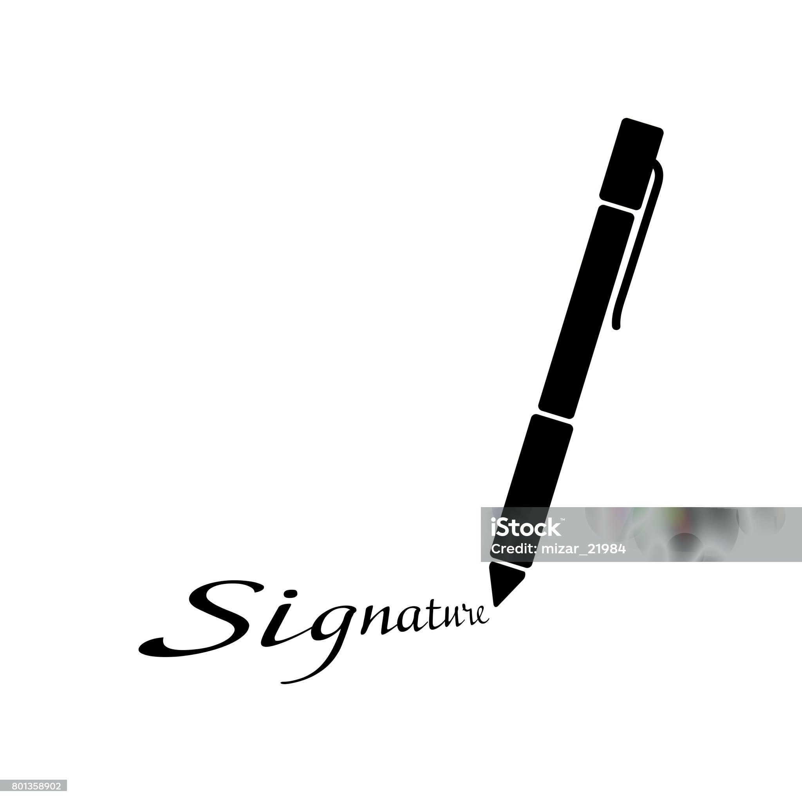

<div class="body">
  <div class="body-content">
    <div class="body-content-elem">
      <div class="retourner">
        <a (click)="goBack()">
          <i class="fa-solid fa-arrow-left"></i>
          Retourner</a
        >
      </div>

      <div class="buttons">
        <button (click)="downloadAsImage()">Télécharger en image</button>
        <button (click)="downloadAsPDF()">Télécharger en pdf</button>
      </div>
    </div>
    <div class="body-content-certificat scale" #certificat>
      <div class="corner-bar top-top"></div>
      <div class="corner-bar top-left"></div>
      <div class="corner-bar bottom-right"></div>
      <div class="corner-bar bottom-bottom"></div>

      <div class="body-content-certificat-content">
        <div class="body-content-certificat-content-head">
          
          <h1 class="certificat-title">CERTIFICAT DE RÉUSSITE</h1>
          
        </div>

        <div class="body-content-certificat-content-body">
          <p>ce certificat est fièrement décerné à</p>
          <h2>Bangaly kourouma</h2>
          <p class="info">
            Pour avoir complété avec succès la formation "<span class="course"
              >Éthique et Transparence dans le Service Public</span
            >" d'une durée de
            <span class="strong">6&nbsp;heures&nbsp;30&nbsp;min</span> à la date
            du <span class="strong">21&nbsp;/&nbsp;07&nbsp;/&nbsp;2024</span>.
          </p>
          <p class="foi">
            En foi de quoi, le présent certificat de réussite lui est décerné
            pour servir et valoir ce que de droit.
          </p>
        </div>

        <div class="body-content-certificat-content-footer">
          <div class="responsable">
            <div class="signature">
              
            </div>
            <div class="underline"></div>
            <p class="name">Nom du responsable</p>
            <p class="function">Cabinet Karamo Conseil</p>
          </div>

          <div class="success">
            
          </div>

          <div class="responsable">
            <div class="signature">
              
            </div>
            <div class="underline"></div>
            <p class="name">Aimé Stéphane Mansaré</p>
            <p class="function">Directeur du CERFOP</p>
          </div>
        </div>
      </div>
    </div>
  </div>
</div>
